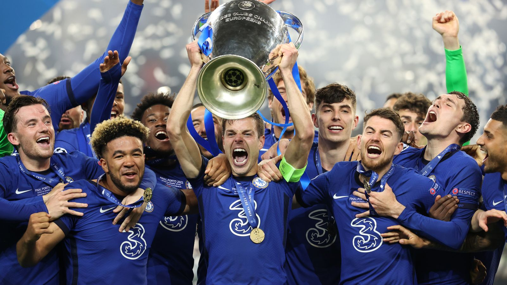

A way to describe myself is that ever since I could talk I was a curios being with a passion for knowledge and a better understanding of the world we live in
Personally,I consider myself a man of few words.I probably could not hold a conversation with someone I have just met for more than five minutes give or take. This is could be from my introvert sort of nature and my lack of desire to establish new relationships with people,you could say I have a small bubble of people I interact with but to me this gives off a more genuine understanding of the people around me and how they operate.To try not to go on a tangent,describing myself could be one of the most difficult things someone could ask of me because I don't tend to give much insight or thought about who Iam as a person,I could probably forget how I look like if I didn't have a mirror in my house.Having said that though,this doesn't mean I invest on others more than I do myself really,I will always care about the wellbeing of others but not to an obsessive state.
Here are some of my interests:
I practice Christianity as a protestant.I try to go to church every week but if I can't make it due to unforeseen circumstances like an illess, I would watch it live.The church I go to is the Jubilee Christian Church situated in Parklands.
Learning something new everyday always gives me a sense of accomplishment.My highest level of education is in highschool but I guess that is about to change once I graduate from Moringa School.
I am a massive consumer of entertainment,I find it very fascinating in the sense that you can invest in the fictional worlds projected.Safe to say that I am a fan of fiction,not necessarily just movies and series but books as well.Recently I have found my self reading lots of Japanese and Korean comics also known as "mangas and manhwas" respectively,I highly recommend Eyeshield 21 written by Riichiro Inagaki and Illustrated by Yusuke Murata.It is a sports manga about american football.
On the topic of sports,I am a fan of basketball,boxing and the aforementioned american football but if I was to say which sport I would call my favorite I would have to say Football/Soccer because whatever name you call it,it is incredibly entertaining and at times emotional especially if your club is involved.For me I would say I support Chelsea Football Club,the 2021 UEFA champions league winners. Check out link.The stuff of dreams!
As presented Iam a simple being,I may have convinced myself though that I could by an author the more I worked on this but my aim was to try and express myself as much as I could and as fast as I could.Hopefully,you found this intriguing.Thank you.